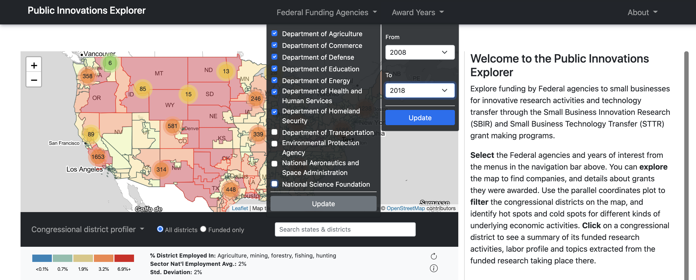
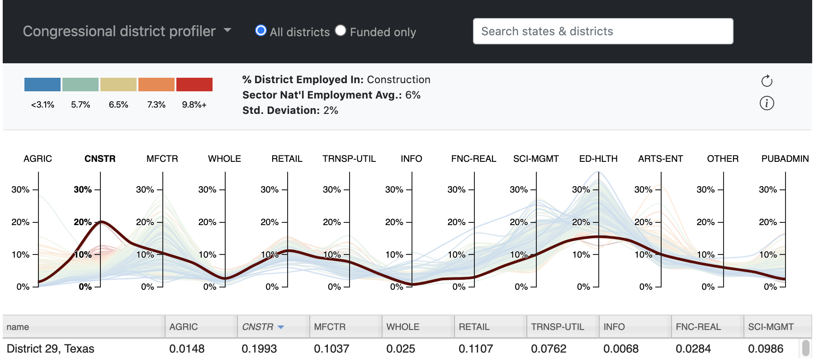
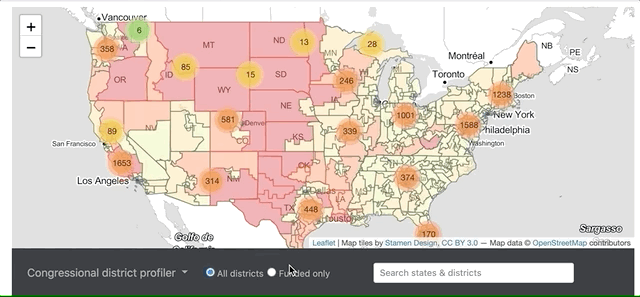
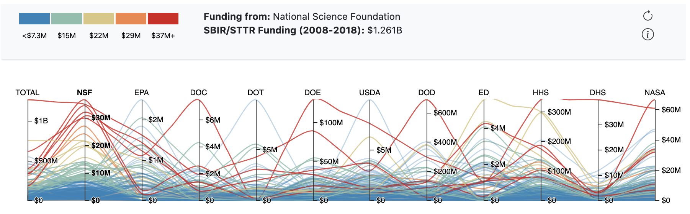
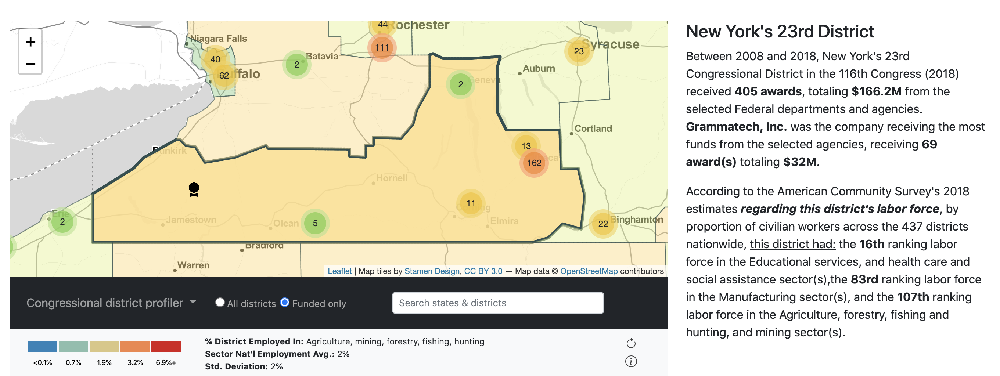
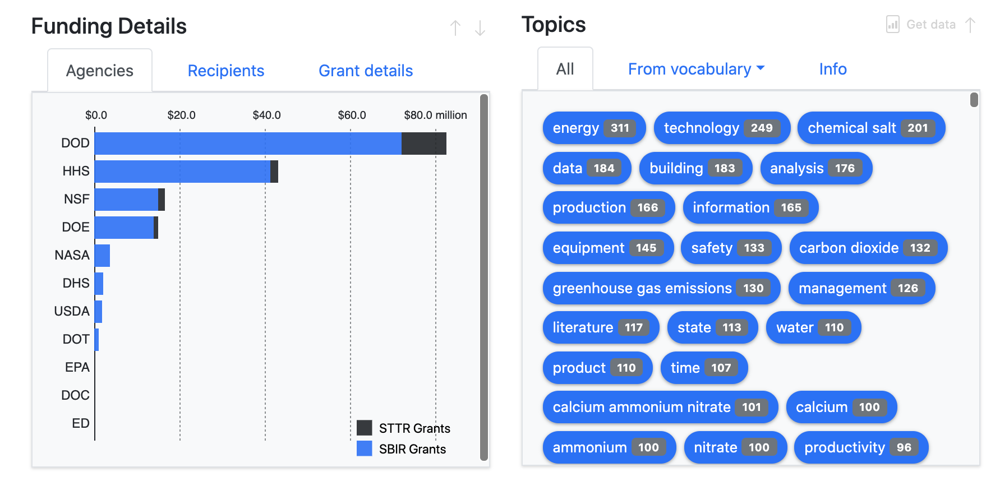
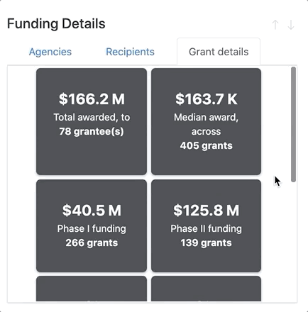

The explorer was built with a variety of analysts in mind: policy analysts exploring Federal funding for innovative research across the country, economic geographers looking to view the landscape of innovation research across the country, and funders & portfolio analysts looking to compare the funding profiles of the Federal agencies and departments participating in the SBIR/STTR programs.
Use the explorer to retrieve district-level summaries regarding the research and technology transfer activities of small businesses, or to identify different awardees and get a sense of their research agendas. While you can always consult the central awards database at SBIR.gov to obtain more detail regarding individual grantees, the Public Innovations Explorer is intended to generate more locally-grounded portraits of specialized research activity. You might consider asking:
By default, only a subset of all Federal agencies and departments participating in the SBIR/STTR programs are loaded. To change the selection, use the Federal Funding Agencies dropdown menu in the navigation bar.
The Explorer makes available data for awards made between 2008 to 2018. You can change the selection by using the Award Years dropdown menu in the navigation bar.
The map panel displays congressional districts for the 116th United States Congress (2018). You can choose how you would like to shade the map using the Congressional District Profiler menu. The same color palette is always used on the map and the parallel coordinates profiler chart.
By default, or when you select “Employment sectors” from the dropdown menu, the map and profiler chart will display district-level employment statistics. Use this data to navigate the map according to the economic landscape of the country. Each line in the profiler chart reflects a district. The level of employment in each sector is shown where the line passes through that sector’s axis. Lines are colored according to the selected axis, which is shown in bold and whose details will appear in the information bar.
In the screenshot below, for example, Texas's 29th District is highlighted. The 29th District, part of the Houston metropolitan area, is among the most construction-heavy workforces in the country with nearly 20% of its workforce working in the Construction sector.
By following the color of the paths, you can also identify relationships between sectors; notice how the districts with relatively lower construction sector workforces (blue and green lines) tend to have relatively higher workforces across the Finance and Real Estate, Science and Management, and Education and Health Services sectors. Let’s say you would like to start exploring the following question:
Click the MFCTR axis on the profiler chart to change the color palette from the default axis to the Manufacturing sectors. The information bar and legend will be updated to provide some contextual information on manufacturing employment across the country. You can either pan to the red and orange districts on the map, or select a portion of districts by using the brushes on the MFCTR axis of the profiler chart. As you set a selection, the districts will highlight on the map. You can even set multiple selections to narrow in on districts that meet multiple criteria, like:
To exclude districts that had NO grant recipients, use the toggle buttons next to the dropdown menu; this will gray-out non-funded districts.
Alternatively, you can navigate the SBIR/STTR funding landscape by evaluating where particular Federal departments and agencies committed funding. Select “Funding agencies” from the Congressional District Profiler menu to display total funding by each agency at the district-level. Now, each line the chart represents a district’s total funding received from the given agency across the selected years. The level of funding in the district from each agency is shown where the line intersects with that agency’s axis.
Use the same techniques described above to explore questions like:
Click on a district to explore details about the funding activity of the selected agencies across the selected years. When a district is selected, both its border and area will become foregrounded.
You can find a summary of the SBIR/STTR funding activity in the district in the righthand column, including the total number of grants and dollars committed, the company that received the most funds, and some details about the districts employment profile. If you change the selected Federal agencies and departments, or the selected funding years, the funding summary will automatically update accordingly.
Below the written summary, in the Funding Details section, you can view a bar graph of total funding by agency, a table of grant-funded companies in the district, and additional details about the grants and grantees.
If a district received no funding from the selected agencies in the selected years, the summary will indicate this, as will the Funding Details and Topics browsers below. You can try expanding the selection criteria to see whether funds were provided to companies located in the district by other agencies or in other years than those selected.
You can zoom in on clusters to see where companies receiving SBIR/STTR from the selected agencies in the selected years were located. If you have selected a district, you can also locate recipients by opening up the Recipients tab of the Funding Details browser and double-clicking on the name of the company.
When you click on the award icon, you will see the awards received by the company from the selected agencies in the selected years. You can scroll through the popup on the map to see the awards.
To obtain additional information about a specific company or award, a quick web search for the award title or company will usually yield the SBIR.gov award or company page within the first couple of results. There, you can find more information about the company, or read the full award abstract to learn more about the research.
Within the Funding Details section, you can select the Grant Details tab to see various details regarding the grants made by the selected agencies in the selected years in the selected district. Details for the selected district include:
To examine the range of research topics addressed by companies in the selected district, you can scroll through the Topics browser to see keywords extracted from the abstracts of awards.
Keywords are extracted using two approaches:
You can use the Get data icon to get keyword data for the selected district from the underlying respository. That data includes award counts, aggregate word counts, grant IDs, and keyword raw frequencies by year and funder. You can use this data in conjunction with the underlying awards data here to perform your own qualitative analyses. Identifiers included in the grant ID lists correspond the following from the awards data: Agency_Tracking_Number + "_" + Contract